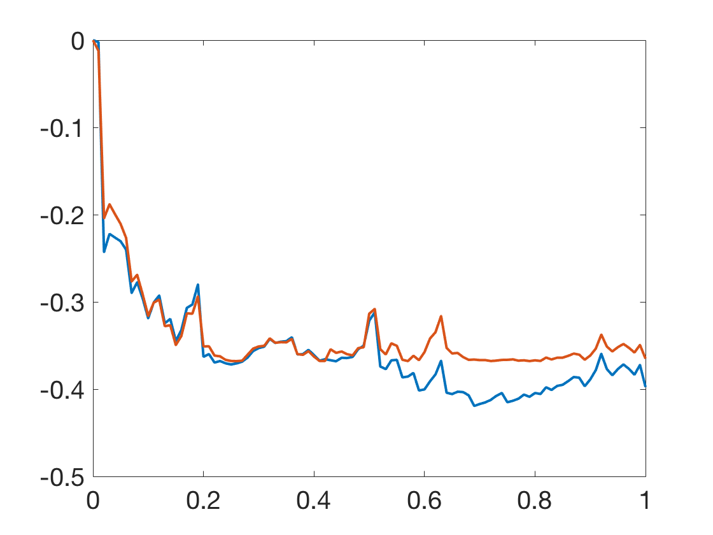
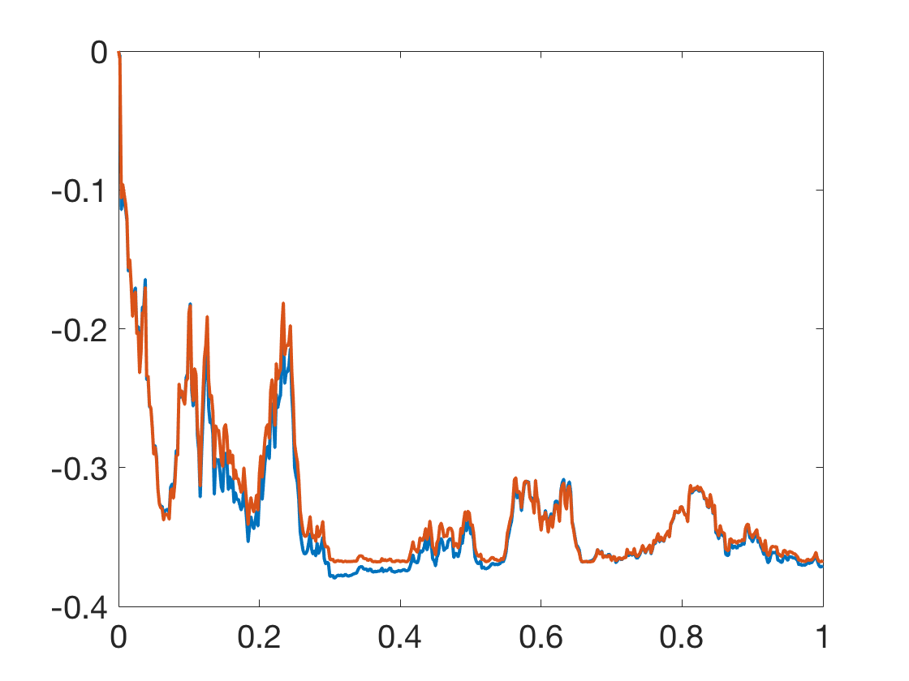

Additional Examples 9.4
1 Show that the stochastic differential equation \[ dy = (y/2+e^{B_t})\ dt + (y+e^{B_t})\ dB_t\]
with initial condition \(y(0) = 0\) has solution \(y(t) = B_te^{B_t}.\)

Apply the Ito formula to the random process \(y(t) = B_te^{B_t} = f(t,B_t)\) where \(f(t,x) = xe^x\). The Ito formula yields
\begin{eqnarray*}
dy &=& (B_t+1)e^{B_t}\ dB_t + \frac{1}{2}(B_t+2)e^{B_t}\ dB_t\ dB_t\\
&=& (y/2+e^{B_t})\ dt + (y+e^{B_t})\ dB_t
\end{eqnarray*}
where \(dB_t\ dB_t = dt\).
2 Use the Euler-Maruyama Method to find an approximate solution to the initial value problem of Additional Example 1.
Plot the approximate solution along with the exact solution using the same Brownian motion.
Two realizations are shown below. The first uses step size \(h=0.01\) and the second uses step size \(h=0.002.\)
The Euler-Maruyama approximation is shown in blue, and the exact solution with the same Brownian increments is in red.

